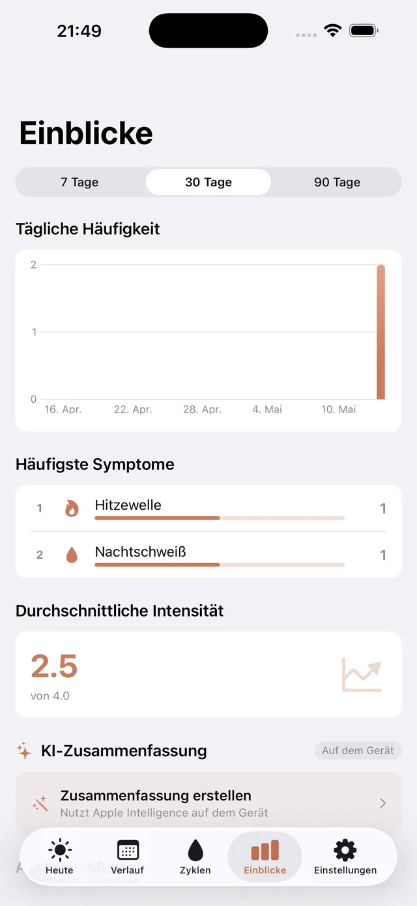
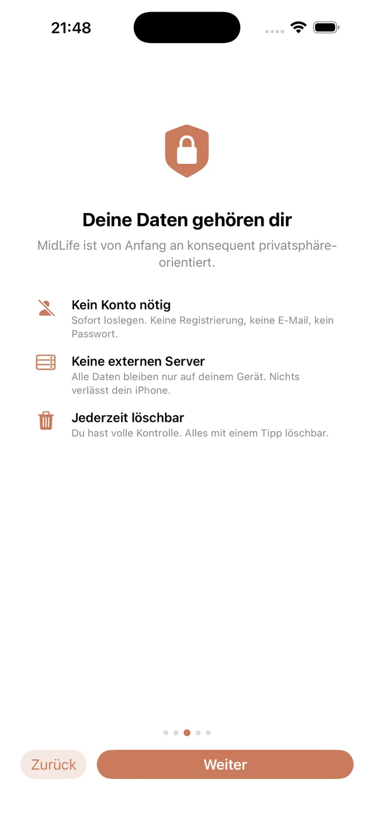

Was MidLife kann
Ein Tagebuch für die Wechseljahre – gebaut für unregelmäßige Zyklen und für alle, die ihre Daten lieber bei sich behalten.
Mit einem Tipp erfassen
32 Symptome in sechs Bereichen, von Hitzewallung bis Gehirnnebel – mit Stärke, Auslöser und Notiz.
Unregelmäßige Zyklen
Für die Perimenopause gemacht: Zyklen von 21 bis 60 Tagen statt 28-Tage-Lehrbuchwerten.
Muster erkennen PRO
Häufigkeit, Tageszeiten und mögliche Auslöser im Überblick, dazu eine kurze Zusammenfassung – berechnet auf dem iPhone.
Arztbericht als PDF PRO
Einen Zeitraum wählen, Bericht erzeugen, beim Termin zeigen oder weitergeben – Sie entscheiden, an wen.
Medikamente & HRT PRO
Hormonersatztherapie und andere Mittel festhalten, mit Erinnerungen direkt auf dem iPhone.
Widget & Siri
Eine Hitzewallung vom Home-Bildschirm aus eintragen, ohne die App zu öffnen.


Ihre Daten bleiben bei Ihnen.
- Kein Konto, keine Registrierung, keine E-Mail-Adresse
- Keine Cloud: alles liegt nur auf Ihrem iPhone
- Keine Werbung und keine Analyse in der App
- Jederzeit mit einem Tipp vollständig löschbar
Gratis starten. Einmal zahlen, fertig.
MidLife ist kostenlos. Wer Arztbericht, Medikamente, den vollständigen Verlauf und alle Auswertungen möchte, schaltet MidLife Pro mit einem einmaligen Kauf frei – ohne Abo.
Gratis im App Store ladenMidLife ist ein Tagebuch zur eigenen Dokumentation. Es stellt keine Diagnosen, empfiehlt keine Behandlung und ersetzt keine ärztliche Beratung.